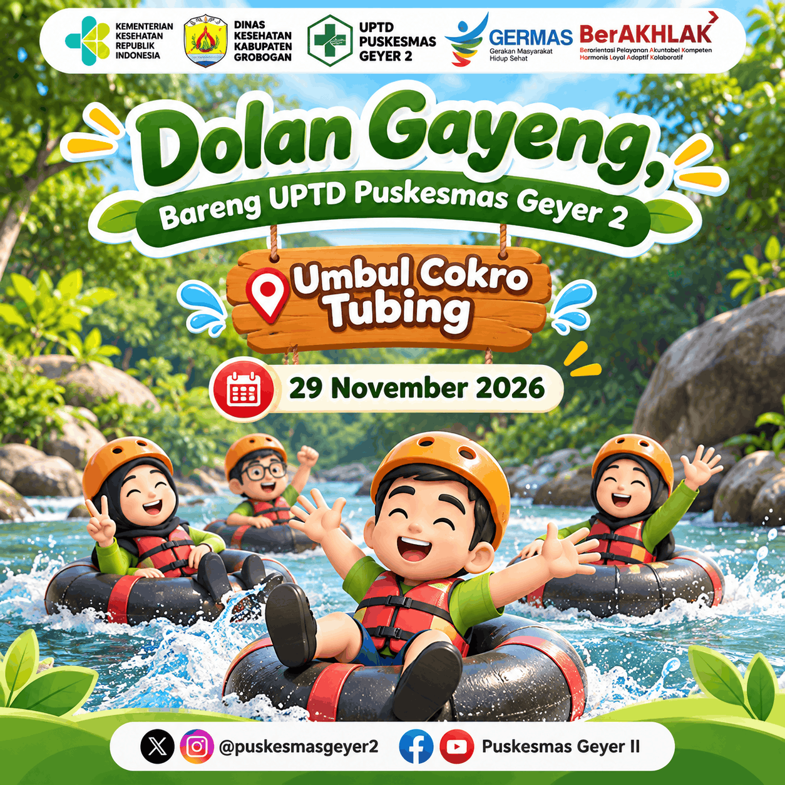

UPTD Puskesmas Geyer 2 mempersembahkan
DOLAN
GAYENG!
Bareng UPTD Puskesmas Geyer 2
📅 Minggu, 29 November 2026
River Tubing Cokro • Klaten

Teman Sehat, Keluarga HebatDOLAN GAYENG 2026
01 / Awali perjalanan
Siap-siap berangkat!
06.00 – 07.00Berkumpul & cek kesiapanCek peserta dan perlengkapan di titik kumpul Puskesmas Geyer 2.
07.00 – 09.30Perjalanan menuju CokroPerjalanan bersama menuju River Tubing Cokro, Klaten.
📍 Titik kumpul: Puskesmas Geyer 2
UPTD Puskesmas Geyer 2Perjalanan dimulai dengan semangat!
02 / Persiapan tubing
Waktunya bersiap basah-basahan!
09.30 – 10.30Registrasi & antrean tubingRegistrasi peserta dan menunggu antrean pengarungan.
10.30 – 11.30River TubingPengarungan seru di Sungai Cokro.
👕 Dress code saat registrasi/tubing: baju warna kuning kunyit
River Tubing CokroUtamakan keselamatan dan ikuti arahan pemandu
03 / Rehat & acara inti
Segarkan diri, lalu rayakan kebersamaan
11.30 – 12.30Bilas, istirahat, sholat & makan siangWaktu untuk membersihkan diri dan mengisi tenaga.
12.30 – 14.00Acara inti di Omah CokroSaatnya menikmati kebersamaan seluruh keluarga besar Puskesmas Geyer 2.
👔 Dress code acara inti: bebas, rapi dan sopan
Omah CokroKebersamaan adalah keseruan utama
04 / Persiapan pulang
Sebelum pulang, mampir dulu!
14.00 – 14.15Persiapan melanjutkan perjalananBerkumpul di parkiran Cokro.
14.15 – 15.00Pusat oleh-olehKampoeng Banana • Krezzz Sidowayah
🛍️ Pastikan barang bawaan dan oleh-oleh tidak tertinggal.
Agenda perjalanan pulangKenangan dibawa, semangat tetap menyala!
05 / Sampai kembali
Perjalanan pulang
15.00 – 17.00
Perjalanan kembali menuju Puskesmas Geyer 2.
🕔 17.00 • Tiba di Puskesmas Geyer 2
Terima kasih sudah ikut Dolan GayengUPTD Puskesmas Geyer 2
Sampai jumpa di keseruan berikutnya
SEHAT BARENG,
GAYENG BARENG!
Terima kasih atas kebersamaan seluruh keluarga besar UPTD Puskesmas Geyer 2.
Teman Sehat, Keluarga Hebat 💚
29 November 2026 • River Tubing Cokro, Klaten
GERMAS • BerAKHLAKUPTD Puskesmas Geyer 2